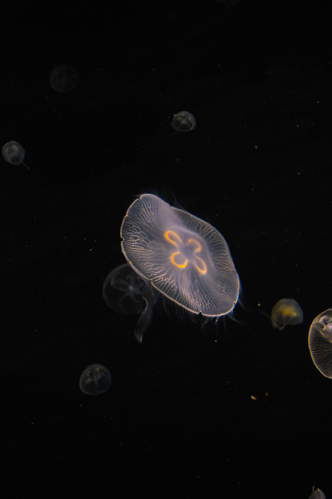
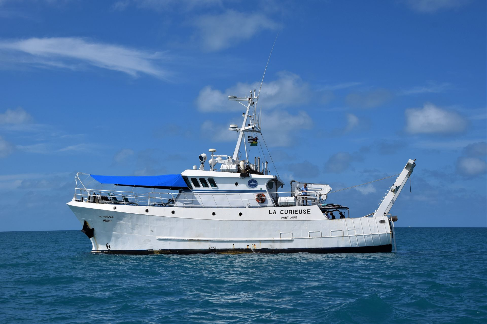

214
dives piloted as pilot-in-command, all in classed vehicles
Human-occupied submersible pilot — 6,500 m class
Solveig Iversen pilots research submersibles for oceanographic institutes — vent fields, trench transects, instrument recovery, to 6,500 metres. The proposition is not the depth. It is that every dive is planned as a budget of minutes: descent, bottom, ascent — and a reserve of life support that is never spent on science.

This is the arithmetic every charter starts with, done in the open. The vehicle class flown is a 6,500 m human-occupied submersible, three occupants — pilot plus two observers. The planner reads the class figures printed in the table; check its sums against them. Depths and bottom times are stepped, not typed, because that is how profiles are actually negotiated: in round numbers, with the margin watching.
Steps of 30 min · planned range 1 h – 10 h
Total submerged 481.1 min against a usable budget of 720 min (loaded 960 min less the 25% reserve). The dive surfaces with 238.9 min (3 h 59 min) of margin untouched above the reserve. This profile can be flown as planned.
These are agreed before a charter is signed and they do not get renegotiated on the day, at the rail, or at depth. Any one of them ends the dive. A scrubbed dive is a successful procedure: the criteria working is the product working. The full register is a contract document; this is its substance.
| Criterion | Printed threshold | Action |
|---|---|---|
| A.01 — Sea state | Above sea state 5 at launch or recovery, or forecast to exceed it inside the dive window | No launch. On the surface in rising weather, the dive is already over. |
| A.02 — Life support | CO₂ scrubber or O₂ reading outside the printed envelope at the pre-dive check, or trending out in the water | Scrub before launch. Ascend if it happens below. No waivers, no “watch it for ten minutes”. |
| A.03 — Communications | Loss of through-water comms with the surface for more than 15 minutes | Ascend. A submersible that cannot talk does not stay down. |
| A.04 — Power | Electrical bus fault, or battery state below the printed ascent threshold | Ascend immediately, whatever the science party is in the middle of. |
| A.05 — Ingress | Any water-ingress indication in the personnel sphere or an equipment bay | Emergency ascent. Nothing is diagnosed at depth. |
| A.06 — Surface position | Support vessel cannot hold station over the dive site | Hold or abort on the pilot's call. Recovery is never improvised. |
The pilot's abort call is final and is not a billable dispute — see the engagement terms on the practice page.
What moves the price: sea days first, mobilisation distance second, depth class third — a deeper class means a different vehicle, not a surcharge on this one. Everything else is conversation.
| Service | Clients | Mission class | Status |
|---|---|---|---|
| Science dive piloting | Oceanographic institutes | 2,000–6,500 m | Booking — 2026 |
| Instrument deployment & recovery | Seafloor observatories, research programmes | To 6,500 m | Booking — 2026 |
| Vent & seep survey support | Research programmes | 2,000–6,500 m | Booking — 2026 |
| Expedition planning & profile design | Institutes, vehicle operators | All classes flown | Waitlist |
| Pilot-only engagements | Owners of classed vehicles | Class certificate required | By enquiry |
| Tourism & experience dives | — | — | Not offered |
Why scrub days are billed: a pilot who loses money by aborting will one day be tempted not to. Billing the day at the full rate makes the abort call cost the pilot nothing — which is exactly what the science party is paying for.
Tourism is not offered at any price. Two observer seats exist so that two scientists can work; they are not sold as experiences.
Regional mobilisation is the North Atlantic from Bergen; trans-ocean covers a Pacific or Indian Ocean season. An estimate from the printed card, not a quote — a quote follows a scoping call and a draft profile for your actual dive sites.
Nine dives, one map. An oceanographic institute needed a hydrothermal vent field on the East Pacific Rise surveyed in a single season: depths 4,180–4,650 m, a sampling grid that could not move, and a ship window that could.
The profiles were set by the planner's arithmetic before sailing — and two planned five-hour bottoms were cut to four hours ten when the working area moved deeper than the proposal assumed. The grid finished a day early, because nothing at depth was ever improvised.
“She cut two of our planned five-hour bottoms to four hours ten, on paper, before we sailed — and the field work still finished early. I have flown with pilots who treat the profile as a suggestion. Solveig treats it as the contract.”
